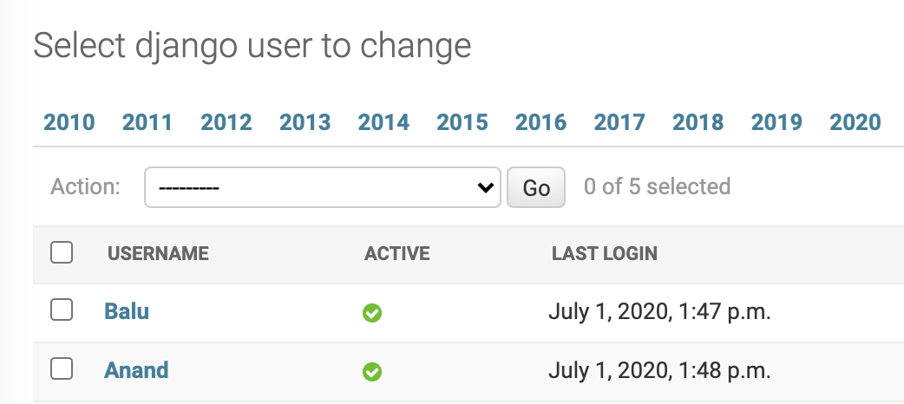

Set Default Date For Date Hierarchy In Django Admin
Introduction
When we monitor daily events from django admin, most of the time we are interested in events related to today. Django admin provides date based drill down navigation page via ModelAdmin.date_hierarchy1 option. With this, we can navigate to any date to filter out events related to that date.
One problem with this drill down navigation is, we have to navigate to todays date every time we open a model in admin. Since we are interested in todays events most of the time, setting todays date as default filtered date will solve the problem.
Set Default Date For Date Hierarchy
Let us create an admin page to show all the users who logged in today. Since User model is already registered in admin by default, let us create a proxy model to register it again.
from django.contrib.auth.models import User class DjangoUser(User): class Meta: proxy = True
Lets register this model in admin to show logged in users details along with date hierarchy.
from django.contrib import admin @admin.register(DjangoUser) class MetaUserAdmin(admin.ModelAdmin): list_display = ('username', 'is_active', 'last_login') date_hierarchy = 'last_login'
If we open DjangoUser model in admin page, it will show drill down navigation bar like this.

Now, if we drill down to a particular date, django adds additional query params to the admin url. For example, if we visit 2020-06-26 date, corresponding query params are /?last_login__day=26&last_login__month=6&last_login__year=2020.
We can override changelist view and set default params to todays date if there are no query params. If there are query params then render the original response.
@admin.register(DjangoUser) class MetaUserAdmin(admin.ModelAdmin): list_display = ('username', 'is_active', 'last_login') date_hierarchy = 'last_login' def changelist_view(self, request, extra_context=None): if request.GET: return super().changelist_view(request, extra_context=extra_context) date = now().date() params = ['day', 'month', 'year'] field_keys = ['{}__{}'.format(self.date_hierarchy, i) for i in params] field_values = [getattr(date, i) for i in params] query_params = dict(zip(field_keys, field_values)) url = '{}?{}'.format(request.path, urlencode(query_params)) return redirect(url)
Now if we open the same admin page, it will redirect to todays date by default.

Conclusion
In this article, we have seen how to set a default date for date_hierarchy in admin page. We can also achieve similar filtering by settiing default values for search_filter or list_filter which will filter items related to any specific date.